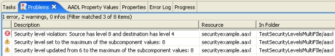

Previous
Next
Previous
Next 
| 5.2 An Overview of AADL Properties |
An
AADL property provides information about an element of an AADL specification. For
example, properties are used to provide the period of a thread, the latency of a connection, or
the size of data. A property has a name and a type; only values of the appropriate type can be
associated with a property. Properties are declared in named property sets. Property
associations in component declarations assign a particular property value to a particular
property for a particular component.
A
property set contains three kinds of declarations:
- Property type declarations
- Property constant declarations
- Property name—or simply property—declarations
For
example, the following AADL specification
property set Example is
-- Unit Type declaration
English_Units: type units
(inch, foot => inch
* 12, yard => foot * 3);
-- Integer type declaration
Length: type aadlinteger units Example::English_Units;
-- Constant declaration
One_Foot: constant Example::Length
=> 1 foot;
-- Property declaration
Documentation_Thickness:
Example::Length =>
value(Example::One_Foot)
applies to (processor,
bus, system);
end Example;
declares
a property set named Example that contains two property
type declarations, one
property constant declaration, and a property declaration. Specifically, the property set first
declares the unit type English_Units, which contains three
elements inch, foot, and yard. The
second type, Length, is declared to be integers
labeled by units from English_Units. The
property constant One_Foot is of type Length, and has the value 1 foot. Finally, the property
Documentation_Thickness is declared. It
has values of type Length, and a default value of
One_Foot. Furthermore, only
processor, bus, and system components can associate values
with this property.
Here
we give an overview of AADL property types and property declarations intended to
assist the producers of analyses in understanding what kind of properties can be expressed for
use by analyses. We do not consider property constants any further except for how they
impact the meta model. The reader is referred to Chapter 10 of the AADL Specification for
more information.
| 5.2.1 AADL Property Types |
Property
types constrain the values that can be associated with a property. There are nine
kinds of property types:
- The aadlbooleanproperty type represents Boolean values and has two values: trueand false. AADL supports Boolean arithmetic with aadlbooleanvalues.
- The aadlstringproperty type represents string values such as "A String Value".
- The enumeration property type represents an explicitly listed set of identifiers as its set of legal values. For example, the type enumeration (red, green, blue)has the valuesred, green, and blue.
- The unitsproperty type represents an explicitly listed set of measurement unit identifiers, and declares their relationships. For example, the typeunits (inch, foot => inch * 12, yard => foot * 3)declares three measurement unit identifiers, and declares that afootis equivalent to 12 inchunits, and that a yardis equivalent to 3 footunits, or equivalently, 36inchunits. Below we discuss how the meta model and OSATE handle unit conversions. Aunitsproperty type does not have values: it can only be used in the specification of aadlintegerand aadlrealtypes.
- The aadlintegerproperty type represents
an integer value or an integer value with a
measurement unit. If the type specifies a unit type, then the value must be labled with
a measurement unit from the specified unit type. An optional range may also be
specified that further constrains the legal property values; if the type specifies a unit
type, then the bounds of range must be labeled with units. The following are
examples of legal aadlintegerproperty types:
- The typeaadlinteger includes the values-100, 0, 45, 10000, etc.
- The typeaadlinteger 0 .. 10has the values0, 1, 2, 3, 4, 5, 6, 7, 8, 9, and 10.
- The typeaadlinteger units (cm, m => cm * 100)includes the values -5 cm, - 3 m, 0 m, 200 cm, etc.
- The typeaadlinteger 5 foot .. 10 yard units Example::English_Unitsincludes the values 5 foot, 61 inch, 2 yard, 30 foot, and360 inch. The values 59 inchand 31 foot, however, are not assignable to properties of this type because they are outside the allowable range of values.
The type aadlinteger 0 .. 100 units (cm, m => cm * 100)is illegal because the range bounds 0 .. 100do not have measurement units specified, and thus the true range of values is ambiguous.
The maximum integer value expressible as a property value is bounded by the property constantAADL_Project::Max_Aadlinteger. In OSATE, integer values are represented by Java long values, and thus aadlintegervalues are limited to twos- complement 64-bit integers. This is not to be confused with the largest integer value supported by the application system.
- The aadrealproperty type represents a real value or a real value with a measurement unit. Otherwise it is similar to the aadlintegerproperty type. In OSATE, real values are represented by Java double values, which are double-precision 64-bit format IEEE 754 values. Again, this representation has nothing to do with the floating point values that may or may not be supported in the system being modeled.
- The rangetype represents closed
intervals of numbers. It specifies that a property of
this type has a value that is a range term. The bounds on the specifiable ranges are
given by an aadlrealor aadlintegertype. A range term
consists of a lower bound,
an upper bound, and an optional delta that gives the distance between adjacent
values in the range. The following are examples of legal range types:
- The type range of aadlintegerincludes the values -10 .. 10, -10 .. 10 delta 2, 5 .. 7, etc.
- The type range of aadlreal 0.0 .. 10.0includes the values 0.5 .. 9.0 delta 0.1, 9.0 .. 10.0, and 0.0 .. 10.0. The value5.0 .. 11.0is not assignable to properties of this type because it bounds are not contained within 0.0 .. 10.0.
- The type range of aadlinteger 5 foot .. 10 yard units Example::English_Unitsincludes the values 5 foot .. 7 foot delta 6 inch, 5 yard .. 10 yard delta 1 foot, and60 inch .. 360 inch. The value 9 yard .. 31 footis not assignable to properties of this type because its upper bound is out of range.
- The type range of Example::Lengthdoes include 9 yard .. 31 footbecause the type does not have any bounds on the range bounds.
It
is easy to confuse classifierand referencetypes. The distinction is that the values of
classifiertypes are the names of
component types or implementations whereas the values of
referencestypes are specific subcomponents,
connections, or features in a system
specification. The difference is highlighted in the following example:
property set ps is
classifierType: type classifier (system);
referenceType: type reference (system);
classifierProp: ps::classifierType
applies to (all);
referenceProp: ps::referenceType
applies to (all);
end ps;
system Inner
end Inner;
system Outer
end Outer;
system implementation Outer.Impl
subcomponents
innerSubComponent: system
Inner;
properties
ps::classifierProp =>
system Inner;
ps::referenceProp =>
reference innerSubComponent;
end Outer.Impl;
Property
values can also be lists whose members are restricted to be values of a particular
property type. The AADL Specification considers “listness”to be an attribute of the
property
declaration, not of the property type.
| 5.2.2 AADL Property Declarations |
AADL
property declarations are introduced above, although they deserve a more thorough
description. The following property set contains two property declarations that demonstrate
the major features of property declarations:
property set Example2 is
-- A single-valued property
Stack_Size:
inherit Size
applies to (system,
process, thread)
=> 1 KB;
-- A multi-valued property
Source_Files:
list of aadlstring
applies to (all);
end Example2;
A
property declaration gives a type for the property: the type may be given by referencing a
named type, or by giving the type specification in-line. The property declaration for
Stack_Size references the type AADL_Properties::Size while the property declaration
for
Source_Files uses the type aadlstring directly. The Source_Files property is a multi-valued
property, one whose values are a list of strings. For example the value ("file1.c", "file2.c")
can be assigned to the property Source_Files. In general, a property is made multi-valued by
writing list
of
before its type, and lists are denoted by comma-separated property value
expressions enclosed in parentheses.
The
property declaration for Stack_Size uses the optional inherit modifier, which
affects
how the property lookup algorithm looks for the values of this property. If a property is
inherit, and no property
association for that property is found in the current component, then
the containing component is searched for a property association. This is useful, for example,
to
allow all threads in a thread group to defer to the thread group if they are all supposed to have
the same property value.
All
property declarations in addition to giving a type, must also have an applies to clause.
This clause specifies those categories of components in the specification for which this property
may be associated with a value. In addition to the standard component categories, this list may
specify that the property applies to mode, port
group, flow, [event] [data] port, server
subprogram, parameter, and connections of various kinds.
The component categories may
also be qualified by classifier references. For example, a property that applies to (processor
Intel_x86)
may only be associated with processor components whose component classifier
the processor type Intel_x86 or one of its descendents.
The keyword all is used to indicate
that the property applies to all components.
Finally,
a property declaration may optionally associate a default value with the property. If the
property lookup algorithm is unable to find a value associated with the property for a particular
component then the default value is used.
| 5.2.3 Basic AADL Property Associations |
A
particular element of an AADL specification is given a particular value for a particular
property via a property association. Property associations are made with the properties
clause of component declarations, and within subcomponent declarations. In general, property
associations apply to the declarative AADL specification, and thus all instances of a component
implementation will have the same property values. The declarative model can embody
property associations for specific subcomponent instances via contained property associations,
which provide a path to the particular subcomponent or feature to which the property applies.
The specification below exemplifies the use of property associations.
thread implementation MyThread.Impl
properties
Example2::Source_Files
=> ("MyThread.c", "Helper.c");
end MyThread.Impl;
process implementation MyProcess.Impl
subcomponents
t1: thread MyThread.Impl;
t2: thread MyThread.Impl;
properties
Example2::Stack_Size
=> 2 KB;
end MyProcess.Impl;
system implementation Main.Impl
subcomponents
p: process MyProcess.Impl
{
Example2::Stack_Size => 4 KB applies to t1; };
properties
Example2::Source_files
+=> ("Main.c");
end Main.Impl;
We
have three component implementation declarations. The properties clause of
MyThread.Impl associates via the => operator the value ("MyThread.c",
"Helper.c")
with the Source_Files property. The properties
clause of Main.Impl, however, appends via
the +=> operator the value ("Main.c") to the Source_Files property. The full
value of the
Source_Files property for Main.Impl is the value of Source_Files in the component type
Main (not shown) with the value ("Main.c") appended to it.
The
properties clause of MyProcess.Impl associates the value 2 KB with the Stack_Size
property. Because this property is declared with the inherit modifier, the two thread
subcomponents will also have this property value for Stack_Size.
The
contained property association on subcomponent p in Main.impl, however, changes the
value of the Stack_Size property for the specific
thread instance
t1
of the process instance p
when Main.Impl is instantiated.
If instead the property association on p were {
Example2::Stack_Size => 4 KB; }, then the property association would refer to the
declarative model instead, changing the value of Stack_Size for the process subcomponent
itself.
Property
associations can be more complicated when modes are used. Modal property
associations and other complicating issues are discussed in Section 5.7 Advanced Property
Associations.
| 5.2.4 The “SecurityLevel” Property |
Our
analysis relies on the assignment of security levels to components. There is no standard
property for specifying this, so we declare a new SecurityLevel property in a new SEI
property set:
property set SEI is
SecurityLevel:
aadlinteger
applies to (data, subprogram,
thread, thread group,
process, memory, processor, bus, device,
system);
end SEI;
For
our analysis, the security level of a component is an integer value. The property applies to
all categories of components that can make up a system, but not to connections or to other
model elements such as ports or modes.
Here
is an example AADL specification that makes use of the new property:
thread Peter
features
pe: in event port;
pd: out data port signal;
properties
SEI::SecurityLevel =>
4;
end Peter;
thread implementation Peter.Default
end Peter.Default;
thread Pierre
features
pd: in data port signal;
pe: out event port;
properties
SEI::SecurityLevel =>
7;
end Pierre;
thread implementation Pierre.Default
properties
-- implementation
overwrites the property value of the type
SEI::SecurityLevel =>
8;
end Pierre.Default;
process Proc
end Proc;
-- This component will have its SecurityLevel
property value
-- updated to be maximum of the subcomponent
T1 and T2 values: 8
process implementation Proc.Impl
subcomponents
T1: thread Peter.Default;
T2: thread Pierre.Default;
connections
-- Good connection:
flow from level 4 to level 8
good: data port T1.pd
-> T2.pd;
-- Bad connection:
flow from level 8 to level 4
bad: event port T2.pe
-> T1.pe;
properties
-- Bad: Security
Level isn't high enough
SEI::SecurityLevel =>
6;
end Proc.Impl;
system Main
end Main;
-- This component will receive a SecurityLevel
property value
-- to be the subcomponent value: 8
system implementation Main.Impl
subcomponents
p1: process Proc.Impl;
end Main.Impl;
Thread
types Peter and Pierre have SecurityLevel values of 4 and 7, respectively.
The
Thread implementations Peter.Default and Pierre.Default have SecurityLevel values of 4
and 8 respectively. The analysis will issue a warning that the security level of Proc.Impl is not
high enough and that it has been upgraded, in this case from 6 to 8. Analysis will also issue
a
warning that the security level of Main.Impl has been set to 8. Process Proc.Impl has two
connections between the two threads, one in each direction. The connection from T1 to T2 is
okay because subcomponent T1 has a security level of 4 which is less than T2’s security level
of 8: data is traveling from a less secure to a more secure component. But the connection from
T2 to T1 will be flagged by the
analysis as allowing data to travel from a more secure to a less
secure component. Figure 21 shows the errors and warnings generated by the analysis plug-in
for this example.

Figure 21: Results of applying security
level analysis to the sample specification.
| 5.2.5 Property Lookup |
Because
property values can be inherited from ancestor types and as well as along the
component containment hierarchy, the property values associated with a particular component
may not all be declared in the component itself. In fact, because of the append operator +=>
for list values, the value itself may be constructed from property associations declared in
multiple components. The AADL Specification specifies the algorithm used to determine the
property value associated with a particular property for a particular component. The gist of the
algorithm is as follows:
- Search the component itself for an appropriate property association
- Apply the lookup algorithm to the category of the component.
- If the property is declared with the inherit modifier, apply the lookup algorithm to the container of the component.
- Use the default property value, if one exists.
- Otherwise the property value is considered to be undefined.
An
example lookup is illustrated in Figure 22. Instance4 is an element in the system instance
hierarchy. The value of one of its properties is determined by first looking for a property
associated with the instance itself—shown as step 1. This would be specified by a contained
property association. The contained property association for this instance declared in a
component implementation highest in the instance hierarchy determines that value. If no
instance value exists, the implementation (ImplA) of the instance is examined (step 2). If it
does not exist, ancestor implementations are examined (step 3). If the property value still has
not been determined, the component type is examined (step 4). If not found there, its ancestor
component types are examined (step 5). If not found and the property is inherited, for
subcomponents and features, the enclosing implementation is examined. Otherwise, the
containing component in the component instance hierarchy is examined (step 6). Finally, the
default value is considered.

Figure 22: Example of the order
in which model components are search for property associations. The model on the left is
an AADL instance model; the model on the right is an AADL declarative model.
The
lookup process must also take into account modal properties, modal subcomponents,
property references, and the append operator. The interaction of modes with the property
lookup process together with the complexities of modal properties described above necessitate
the introduction of an additional level of abstraction in the property lookup API provided by
OSATE; see Section 5.8.4 Getting Property Values.